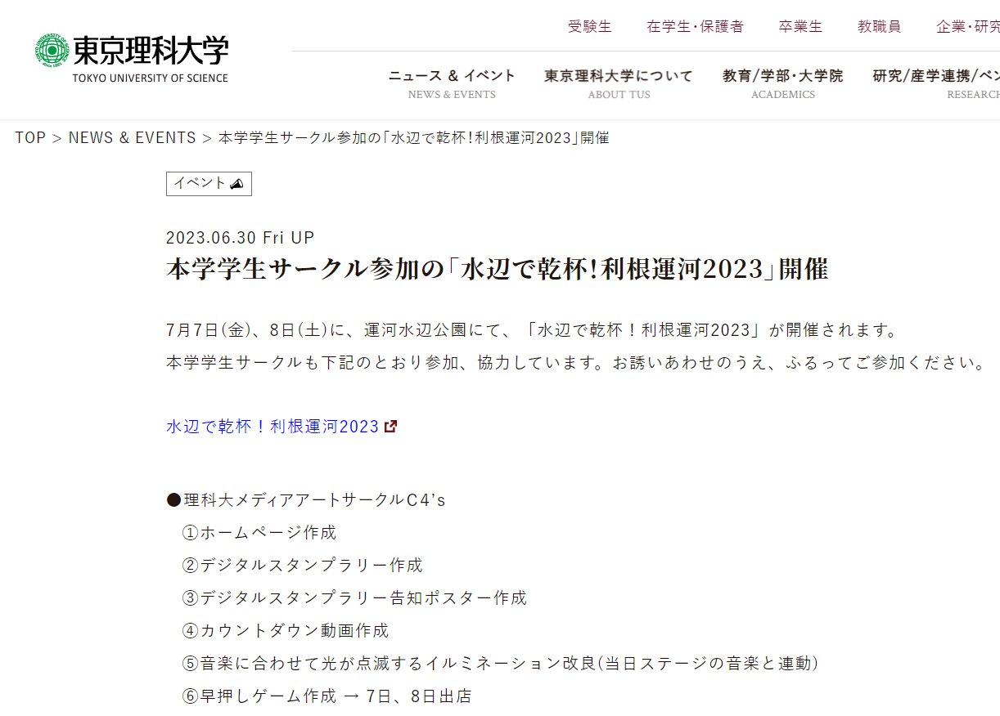
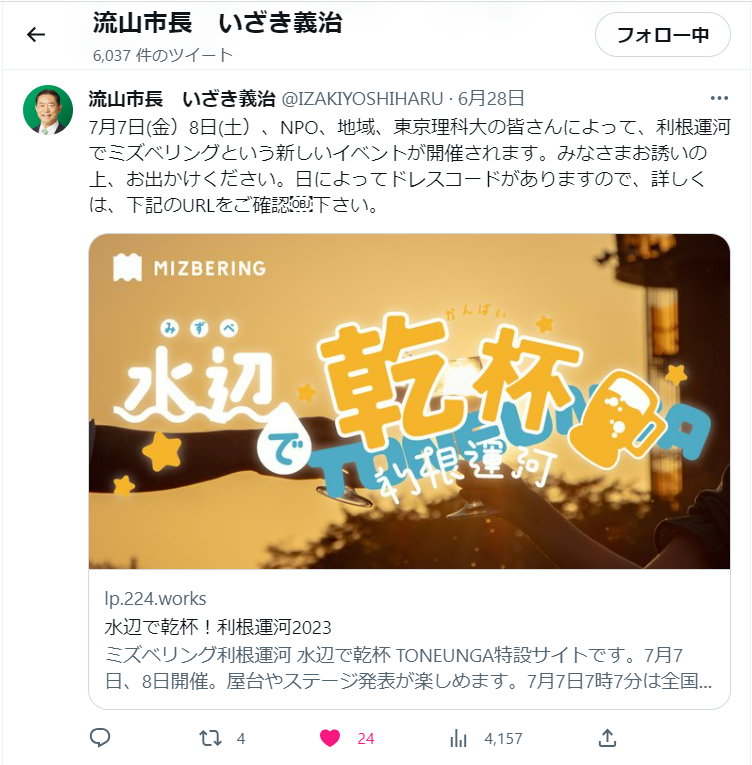

発表者: さとう
アクセスはこちら
https://lp.224.works/mizbering/使った言語
- HTML（たくさん）
- CSS（たくさん）
- JavaScript（カウントダウン部分のみ）
使ったツール
- Tailwind CSS（CSSフレームワーク）
- Adobe Illustrator（画像書き出し用）
- Adobe Fonts（Webフォント）
- Googleマップ（地図埋め込み）
Tailwind CSSとは
Bootstrap（C4's Portalで使われてるやつ）みたいなフレームワーク。HTMLのクラス名のところにmt-4とかtext-lgとか書くことで、その要素の見た目を変更できる。選べる色が多かったり画面幅に応じて表示方法を変えたりできて、デザインを細かくカスタマイズできる。
Bootstrapと違ってJavascriptがセットになっていないため、モーダルウィンドウの表示やハンバーガーメニューの開閉などができない。既存のボタンデザインで送信ボタンを作ったり、送信完了を既存のモーダルウィンドウで表示したり、機能重視のものをサクッと作るならBootstrapが良いかも。
パージ機能搭載。指定したファイルに入っているクラス名を読み込み、使っているデザインだけが入ったCSSを生成することで、CSSを軽量化できる。Bootstrapは基本的にテンプレート全部入ったやつ（CSSだけで152KB）を読み込む必要がある。
サイトの特徴
- ページ１枚で必要な情報が分かる
- 企画一覧のボタンを押して該当箇所に移動できる
- ロゴが画面上部に固定表示されていて、なんかかわいい
- 背景が全画面で固定表示されていて、なんかおしゃれ
- 理科大公式サイト、流山市長のツイートなどにリンクが貼られてる 
- Webフォントがちょい重い 和文Webフォントの宿命
- 画像の情報が中心で、文字でまとめられた情報が少ない 検索エンジン、視覚障害者は読めない

PageSpeed Insightsを見てみる
https://pagespeed.web.dev/analysis/https-lp-224-works-mizbering/qf8fykd2dr?form_factor=mobileアクセス数
Googleアナリティクスはプライバシーポリシー書かなきゃいけないので、サーバーへどれだけアクセスされたかの数を測っている。開発中のリロードや検索エンジンなどのbotのアクセスも含む。
作った感想
久しぶりにちゃんと作ったウェブサイト。WordPressでブログを作ったり、esaに記事を書いたりするのと違って、まっさらな所にサクサクデザインを組んでいけるのは楽しい。
色々なところでサイトが紹介されていて、NPO法人コミュネット流山（利根運河交流館や流山市東部公民館の運営）の力の大きさを感じた。この水辺で乾杯も、国土交通省 江戸川河川事務所・流山市・野田市・東京理科大学から後援をもらっている。（お金は出さないけど応援だけしとくよってやつ）
ご清聴ありがとうございました。質問あればどうぞ。